Liu Bei劉備
161–223
Came east with everything Shu had to recover Jing province. Lost the line, the army and, within the year, his life.
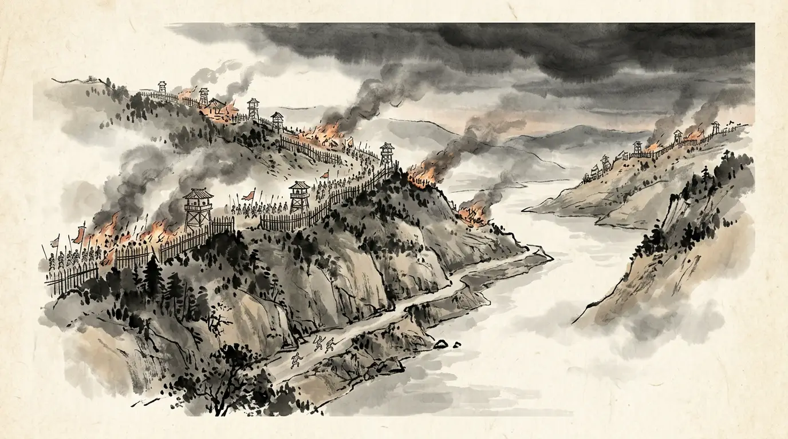
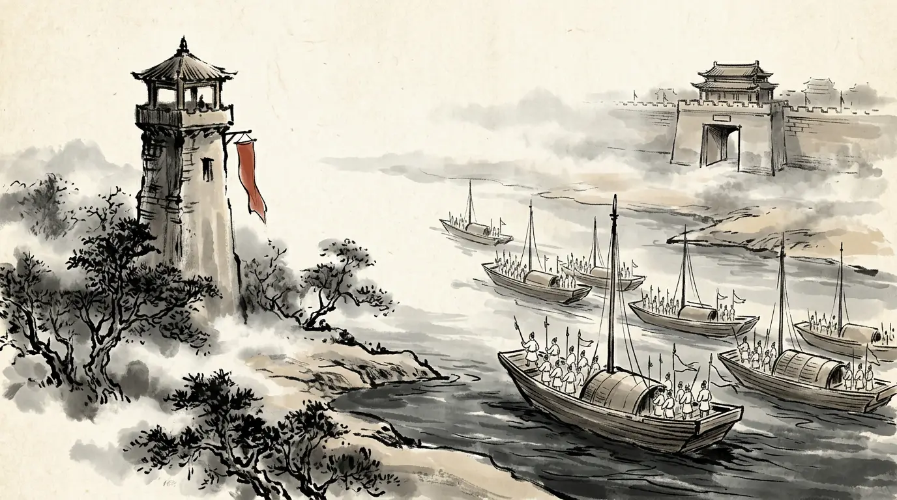
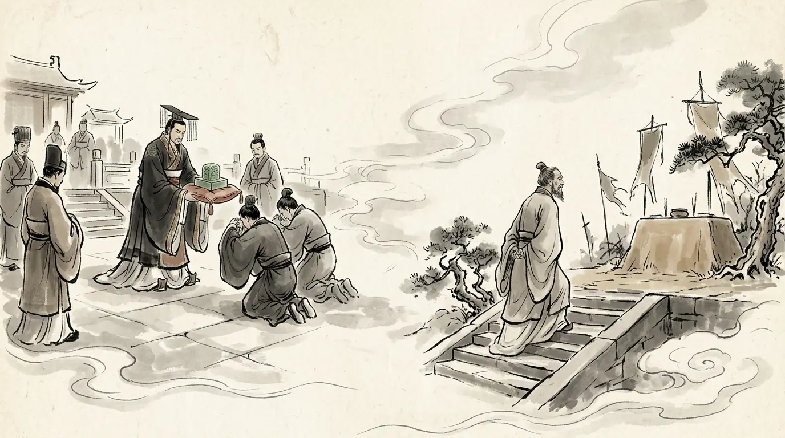
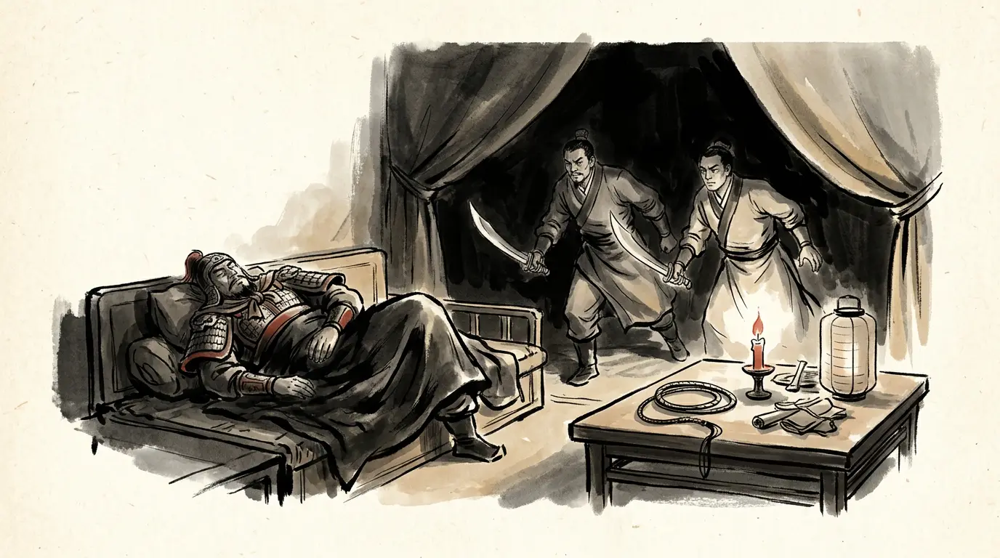
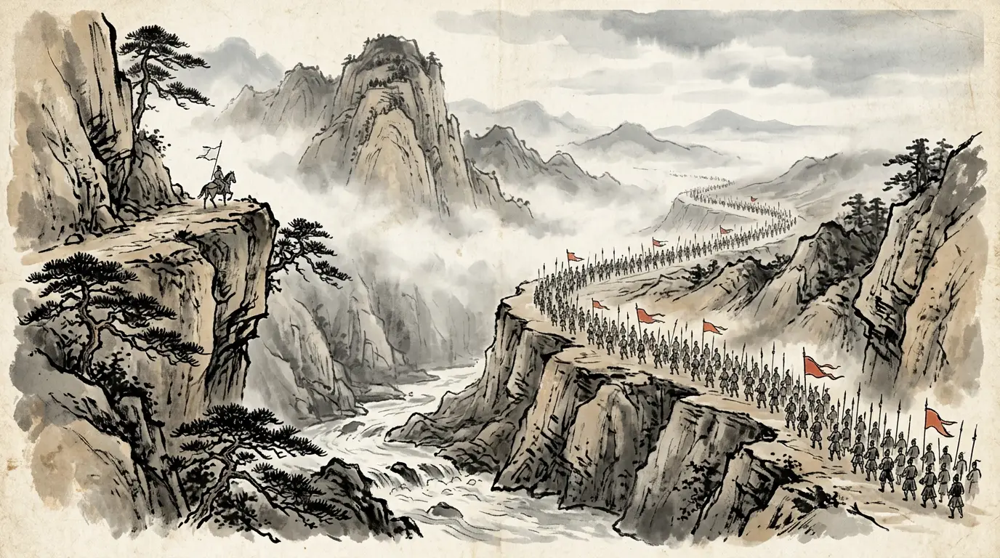
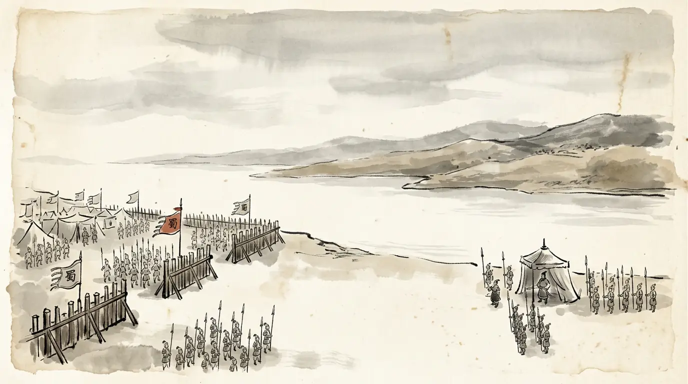
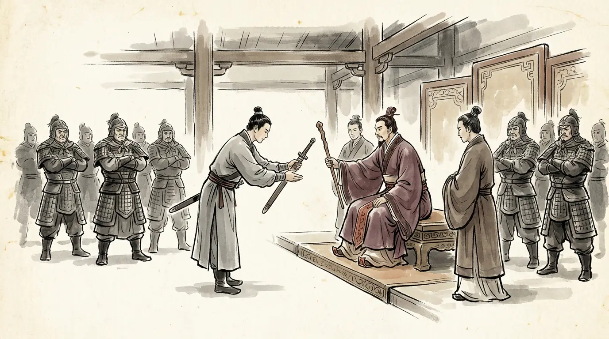
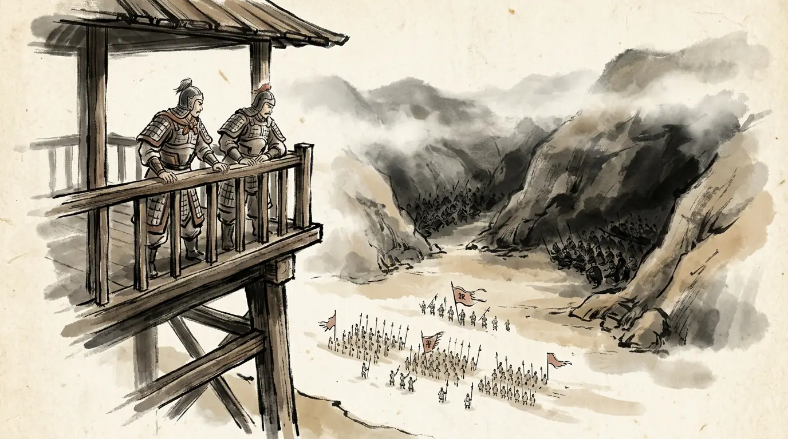
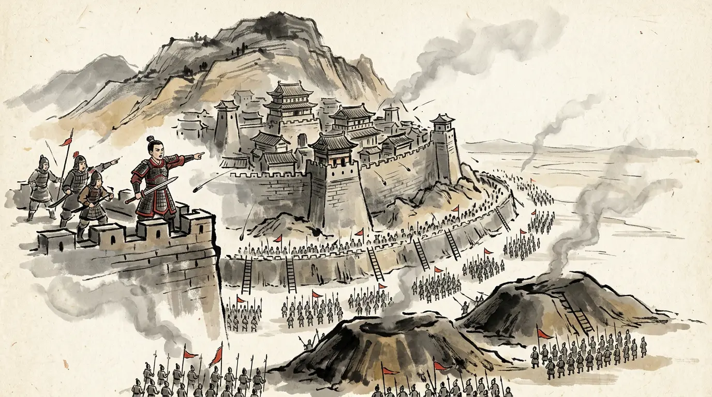
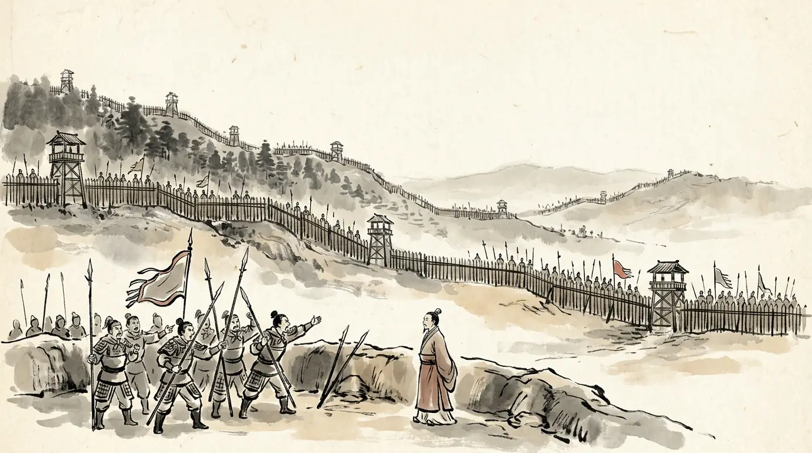
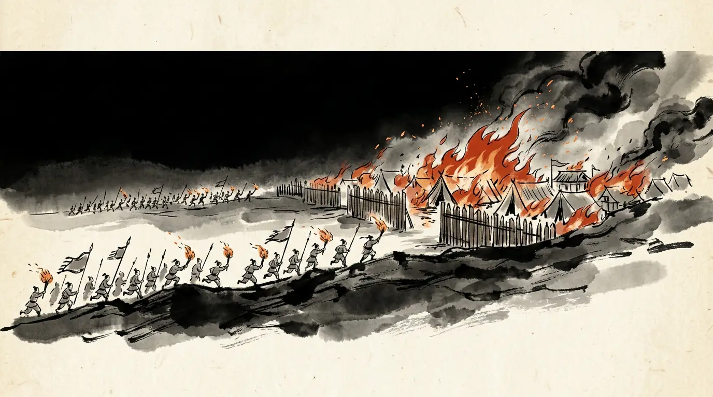
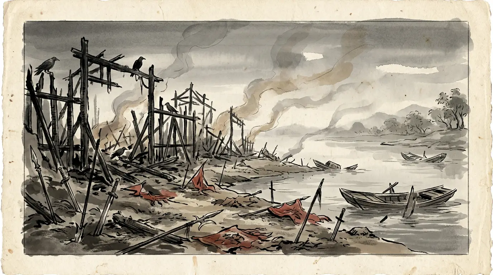
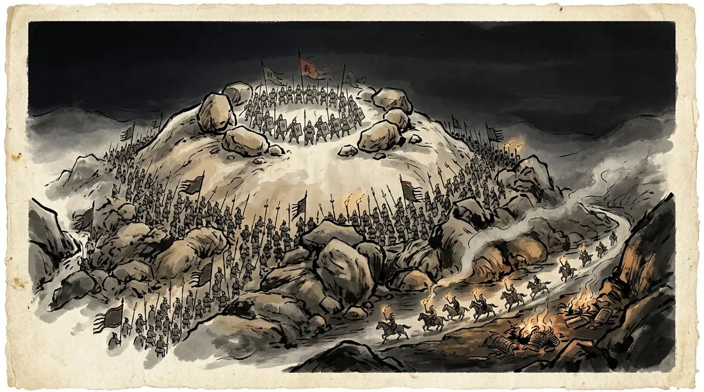
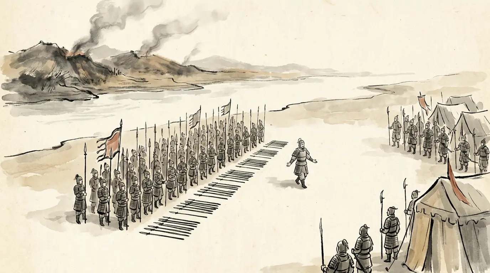
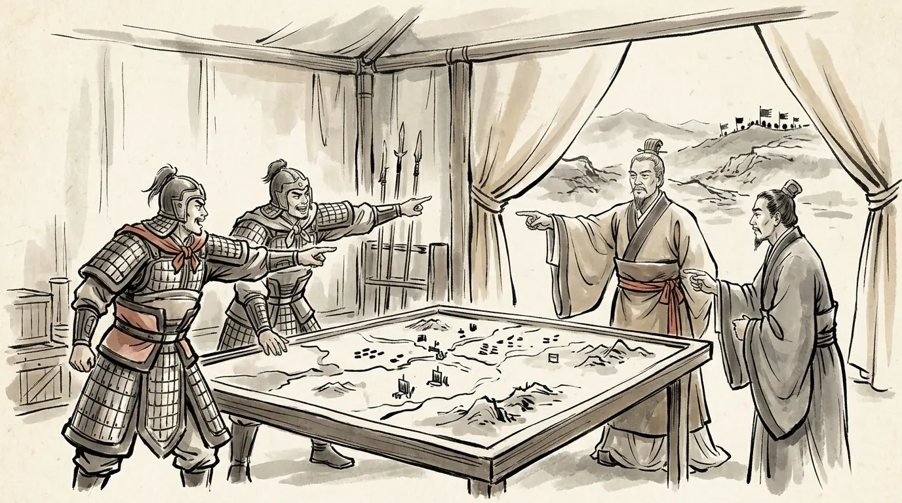
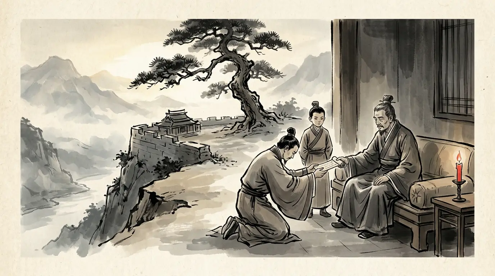
Two men held this year in their hands: an emperor with a grievance and every reason to march, and a scholar of thirty-nine whose own generals wanted him to fight. The fire settled which of them could wait.


The novel Romance of the Three Kingdoms is a masterpiece — and not a source. Where its famous scenes depart from the histories, we leave them out of the story and put them here.
Lu Xun pursued too far, lost his way in Zhuge Liang's stone maze of the Eight Trigrams at Yufu, and was led out by a father-in-law.
No history knows the maze. The sources have Lu Xun stopping at the border on purpose, because Wei's armies were massing behind him; Zhuge Liang was at Baidicheng arranging a succession, not building labyrinths.
The war was grief for Guan Yu gone mad — a vengeful old man's blunder from the first day.
The sources show a reasoned attempt to recover Jing province: Sun Quan offered peace and hostages and was refused; the Shu army held the initiative for six months; and Cao Pi's verdict on the linked camps was a professional judgement on a disposition, not a description of a fit of rage.
The Shu army was annihilated to a man, and Liu Bei died of a broken heart within the year.
He withdrew in order to Yong'an and held it; Huang Quan's northern column came through intact and went over to Wei; the emperor governed, arranged the succession formally, and died of illness ten months after the battle.
Every caption and quotation in this episode traces to one of these. Where scholars disagree, the panel says so.
Fourteen years before this fire, the same river burned: Episode 1 · Fire on the Yangtze (208 CE). The north behind it was decided earlier still, in Episode 2 · The Road to Guandu (200 CE). Twelve years after it, Zhuge Liang dies on the Wei river in Episode 4 · The Last Campaign (234 CE). Meanwhile — meet the cast, or read the chronology of the age.